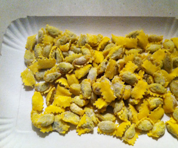

Agnolotti al plin
5,5 von 6Agnolotti al plin von pastificio Defilippis Turin mit Butter servieren.

Agnolotti al plin von pastificio Defilippis Turin mit Butter servieren.

Montagsplausch Nr. 322. Der Abend hiess «Mitbringsel aus Turin».